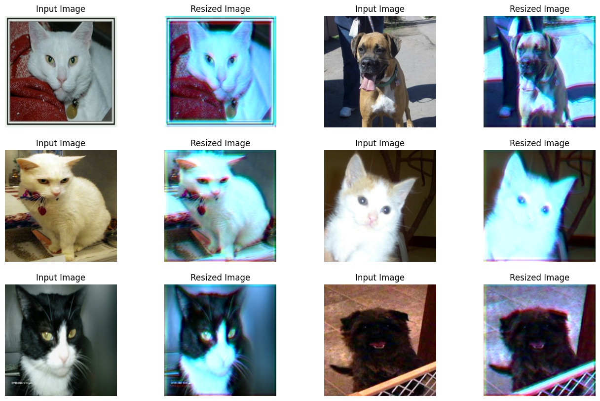
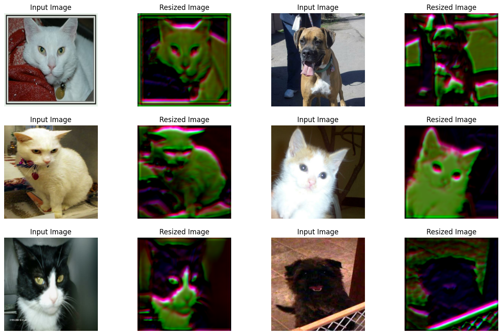

Learning to Resize in Computer Vision
Author: Sayak Paul
Date created: 2021/04/30
Last modified: 2023/12/18
Description: How to optimally learn representations of images for a given resolution.

It is a common belief that if we constrain vision models to perceive things as humans do, their performance can be improved. For example, in this work, Geirhos et al. showed that the vision models pre-trained on the ImageNet-1k dataset are biased towards texture, whereas human beings mostly use the shape descriptor to develop a common perception. But does this belief always apply, especially when it comes to improving the performance of vision models?
It turns out it may not always be the case. When training vision models, it is common to resize images to a lower dimension ((224 x 224), (299 x 299), etc.) to allow mini-batch learning and also to keep up the compute limitations. We generally make use of image resizing methods like bilinear interpolation for this step and the resized images do not lose much of their perceptual character to the human eyes. In Learning to Resize Images for Computer Vision Tasks, Talebi et al. show that if we try to optimize the perceptual quality of the images for the vision models rather than the human eyes, their performance can further be improved. They investigate the following question:
For a given image resolution and a model, how to best resize the given images?
As shown in the paper, this idea helps to consistently improve the performance of the common vision models (pre-trained on ImageNet-1k) like DenseNet-121, ResNet-50, MobileNetV2, and EfficientNets. In this example, we will implement the learnable image resizing module as proposed in the paper and demonstrate that on the Cats and Dogs dataset using the DenseNet-121 architecture.
Setup
import os
os.environ["KERAS_BACKEND"] = "tensorflow"
import keras
from keras import ops
from keras import layers
import tensorflow as tf
import tensorflow_datasets as tfds
tfds.disable_progress_bar()
import matplotlib.pyplot as plt
import numpy as np
Define hyperparameters
In order to facilitate mini-batch learning, we need to have a fixed shape for the images inside a given batch. This is why an initial resizing is required. We first resize all the images to (300 x 300) shape and then learn their optimal representation for the (150 x 150) resolution.
INP_SIZE = (300, 300)
TARGET_SIZE = (150, 150)
INTERPOLATION = "bilinear"
AUTO = tf.data.AUTOTUNE
BATCH_SIZE = 64
EPOCHS = 5
In this example, we will use the bilinear interpolation but the learnable image resizer module is not dependent on any specific interpolation method. We can also use others, such as bicubic.
Load and prepare the dataset
For this example, we will only use 40% of the total training dataset.
train_ds, validation_ds = tfds.load(
"cats_vs_dogs",
# Reserve 10% for validation
split=["train[:40%]", "train[40%:50%]"],
as_supervised=True,
)
def preprocess_dataset(image, label):
image = ops.image.resize(image, (INP_SIZE[0], INP_SIZE[1]))
label = ops.one_hot(label, num_classes=2)
return (image, label)
train_ds = (
train_ds.shuffle(BATCH_SIZE * 100)
.map(preprocess_dataset, num_parallel_calls=AUTO)
.batch(BATCH_SIZE)
.prefetch(AUTO)
)
validation_ds = (
validation_ds.map(preprocess_dataset, num_parallel_calls=AUTO)
.batch(BATCH_SIZE)
.prefetch(AUTO)
)
Define the learnable resizer utilities
The figure below (courtesy: Learning to Resize Images for Computer Vision Tasks) presents the structure of the learnable resizing module:

def conv_block(x, filters, kernel_size, strides, activation=layers.LeakyReLU(0.2)):
x = layers.Conv2D(filters, kernel_size, strides, padding="same", use_bias=False)(x)
x = layers.BatchNormalization()(x)
if activation:
x = activation(x)
return x
def res_block(x):
inputs = x
x = conv_block(x, 16, 3, 1)
x = conv_block(x, 16, 3, 1, activation=None)
return layers.Add()([inputs, x])
# Note: user can change num_res_blocks to >1 also if needed
def get_learnable_resizer(filters=16, num_res_blocks=1, interpolation=INTERPOLATION):
inputs = layers.Input(shape=[None, None, 3])
# First, perform naive resizing.
naive_resize = layers.Resizing(*TARGET_SIZE, interpolation=interpolation)(inputs)
# First convolution block without batch normalization.
x = layers.Conv2D(filters=filters, kernel_size=7, strides=1, padding="same")(inputs)
x = layers.LeakyReLU(0.2)(x)
# Second convolution block with batch normalization.
x = layers.Conv2D(filters=filters, kernel_size=1, strides=1, padding="same")(x)
x = layers.LeakyReLU(0.2)(x)
x = layers.BatchNormalization()(x)
# Intermediate resizing as a bottleneck.
bottleneck = layers.Resizing(*TARGET_SIZE, interpolation=interpolation)(x)
# Residual passes.
# First res_block will get bottleneck output as input
x = res_block(bottleneck)
# Remaining res_blocks will get previous res_block output as input
for _ in range(num_res_blocks - 1):
x = res_block(x)
# Projection.
x = layers.Conv2D(
filters=filters, kernel_size=3, strides=1, padding="same", use_bias=False
)(x)
x = layers.BatchNormalization()(x)
# Skip connection.
x = layers.Add()([bottleneck, x])
# Final resized image.
x = layers.Conv2D(filters=3, kernel_size=7, strides=1, padding="same")(x)
final_resize = layers.Add()([naive_resize, x])
return keras.Model(inputs, final_resize, name="learnable_resizer")
learnable_resizer = get_learnable_resizer()
Visualize the outputs of the learnable resizing module
Here, we visualize how the resized images would look like after being passed through the random weights of the resizer.
sample_images, _ = next(iter(train_ds))
plt.figure(figsize=(16, 10))
for i, image in enumerate(sample_images[:6]):
image = image / 255
ax = plt.subplot(3, 4, 2 * i + 1)
plt.title("Input Image")
plt.imshow(image.numpy().squeeze())
plt.axis("off")
ax = plt.subplot(3, 4, 2 * i + 2)
resized_image = learnable_resizer(image[None, ...])
plt.title("Resized Image")
plt.imshow(resized_image.numpy().squeeze())
plt.axis("off")
Corrupt JPEG data: 65 extraneous bytes before marker 0xd9
WARNING:matplotlib.image:Clipping input data to the valid range for imshow with RGB data ([0..1] for floats or [0..255] for integers).
WARNING:matplotlib.image:Clipping input data to the valid range for imshow with RGB data ([0..1] for floats or [0..255] for integers).
WARNING:matplotlib.image:Clipping input data to the valid range for imshow with RGB data ([0..1] for floats or [0..255] for integers).
WARNING:matplotlib.image:Clipping input data to the valid range for imshow with RGB data ([0..1] for floats or [0..255] for integers).
WARNING:matplotlib.image:Clipping input data to the valid range for imshow with RGB data ([0..1] for floats or [0..255] for integers).
WARNING:matplotlib.image:Clipping input data to the valid range for imshow with RGB data ([0..1] for floats or [0..255] for integers).

Model building utility
def get_model():
backbone = keras.applications.DenseNet121(
weights=None,
include_top=True,
classes=2,
input_shape=((TARGET_SIZE[0], TARGET_SIZE[1], 3)),
)
backbone.trainable = True
inputs = layers.Input((INP_SIZE[0], INP_SIZE[1], 3))
x = layers.Rescaling(scale=1.0 / 255)(inputs)
x = learnable_resizer(x)
outputs = backbone(x)
return keras.Model(inputs, outputs)
The structure of the learnable image resizer module allows for flexible integrations with different vision models.
Compile and train our model with learnable resizer
model = get_model()
model.compile(
loss=keras.losses.CategoricalCrossentropy(label_smoothing=0.1),
optimizer="sgd",
metrics=["accuracy"],
)
model.fit(train_ds, validation_data=validation_ds, epochs=EPOCHS)
Epoch 1/5
146/146 ━━━━━━━━━━━━━━━━━━━━ 1790s 12s/step - accuracy: 0.5783 - loss: 0.6877 - val_accuracy: 0.4953 - val_loss: 0.7173
Epoch 2/5
146/146 ━━━━━━━━━━━━━━━━━━━━ 1738s 12s/step - accuracy: 0.6516 - loss: 0.6436 - val_accuracy: 0.6148 - val_loss: 0.6605
Epoch 3/5
146/146 ━━━━━━━━━━━━━━━━━━━━ 1730s 12s/step - accuracy: 0.6881 - loss: 0.6185 - val_accuracy: 0.5529 - val_loss: 0.8655
Epoch 4/5
146/146 ━━━━━━━━━━━━━━━━━━━━ 1725s 12s/step - accuracy: 0.6985 - loss: 0.5980 - val_accuracy: 0.6862 - val_loss: 0.6070
Epoch 5/5
146/146 ━━━━━━━━━━━━━━━━━━━━ 1722s 12s/step - accuracy: 0.7499 - loss: 0.5595 - val_accuracy: 0.6737 - val_loss: 0.6321
<keras.src.callbacks.history.History at 0x7f126c5440a0>
Visualize the outputs of the trained visualizer
plt.figure(figsize=(16, 10))
for i, image in enumerate(sample_images[:6]):
image = image / 255
ax = plt.subplot(3, 4, 2 * i + 1)
plt.title("Input Image")
plt.imshow(image.numpy().squeeze())
plt.axis("off")
ax = plt.subplot(3, 4, 2 * i + 2)
resized_image = learnable_resizer(image[None, ...])
plt.title("Resized Image")
plt.imshow(resized_image.numpy().squeeze() / 10)
plt.axis("off")
WARNING:matplotlib.image:Clipping input data to the valid range for imshow with RGB data ([0..1] for floats or [0..255] for integers).
WARNING:matplotlib.image:Clipping input data to the valid range for imshow with RGB data ([0..1] for floats or [0..255] for integers).
WARNING:matplotlib.image:Clipping input data to the valid range for imshow with RGB data ([0..1] for floats or [0..255] for integers).
WARNING:matplotlib.image:Clipping input data to the valid range for imshow with RGB data ([0..1] for floats or [0..255] for integers).
WARNING:matplotlib.image:Clipping input data to the valid range for imshow with RGB data ([0..1] for floats or [0..255] for integers).
WARNING:matplotlib.image:Clipping input data to the valid range for imshow with RGB data ([0..1] for floats or [0..255] for integers).

The plot shows that the visuals of the images have improved with training. The following table shows the benefits of using the resizing module in comparison to using the bilinear interpolation:
| Model | Number of parameters (Million) | Top-1 accuracy |
|---|---|---|
| With the learnable resizer | 7.051717 | 67.67% |
| Without the learnable resizer | 7.039554 | 60.19% |
For more details, you can check out this repository. Note the above-reported models were trained for 10 epochs on 90% of the training set of Cats and Dogs unlike this example. Also, note that the increase in the number of parameters due to the resizing module is very negligible. To ensure that the improvement in the performance is not due to stochasticity, the models were trained using the same initial random weights.
Now, a question worth asking here is - isn't the improved accuracy simply a consequence of adding more layers (the resizer is a mini network after all) to the model, compared to the baseline?
To show that it is not the case, the authors conduct the following experiment:
- Take a pre-trained model trained some size, say (224 x 224).
- Now, first, use it to infer predictions on images resized to a lower resolution. Record the performance.
- For the second experiment, plug in the resizer module at the top of the pre-trained model and warm-start the training. Record the performance.
Now, the authors argue that using the second option is better because it helps the model learn how to adjust the representations better with respect to the given resolution. Since the results purely are empirical, a few more experiments such as analyzing the cross-channel interaction would have been even better. It is worth noting that elements like Squeeze and Excitation (SE) blocks, Global Context (GC) blocks also add a few parameters to an existing network but they are known to help a network process information in systematic ways to improve the overall performance.
Notes
- To impose shape bias inside the vision models, Geirhos et al. trained them with a combination of natural and stylized images. It might be interesting to investigate if this learnable resizing module could achieve something similar as the outputs seem to discard the texture information.
- The resizer module can handle arbitrary resolutions and aspect ratios which is very important for tasks like object detection and segmentation.
- There is another closely related topic on adaptive image resizing that attempts to resize images/feature maps adaptively during training. EfficientV2 uses this idea.